课堂笔记提要：先建立“语言模型如何计算概率”的主线，再比较远程 API 与本地部署，最后用 BLEU、ROUGE、PPL 和基准测试形成完整评估观。
学习目标
- 理解语言模型发展历程
- 熟悉大模型任务类型与训练
- 掌握LLM使用
- 熟悉语言模型评估指标
1 语言模型介绍
1.1 什么是语言模型
语言模型（Language Model，LM）旨在建模词汇序列的生成概率，提升机器的语言智能水平，使机器能够模拟人类说话、写作的模式进行自动文本输出。
通俗理解: 用来计算一个句子的概率的模型，也就是判断一句话是否是人话的概率.
标准定义：对于某个句子序列, 如S = {W1, W2, W3, …, Wn}, 语言模型就是计算该序列发生的概率, 即P(S). 如果给定的词序列符合语用习惯, 则给出高概率, 否则给出低概率.
这个概率计算可以基于概率论的 链式法则 进行分解：
这个公式意味着，整个句子的概率等于每个词在给定其所有前文条件下出现的概率的乘积。
因此，语言模型的本质任务可以归结为 预测下一个词 ：计算在已知前文 (w_1, ..., wi-1) 的情况下，下一个词是 w_i 的概率 P(w_i|w_1, ..., wi-1)。
1.2 语言模型的发展历程
语言模型的技术发展大致可以分为四个主要阶段：
- 基于规则和统计的语言模型 (Rule-based & Statistical LM)
- 神经网络语言模型 (Neural Network LM)
- 预训练语言模型 (Pre-trained LM)
- 大语言模型 (Large LM)
| 阶段 | 时间周期 | 主要特点 |
|---|---|---|
| 基于规则与统计的语言模型 | 20世纪80年代末 - 21世纪初 | 基于规则与概率：这类模型主要依赖于人工设计的规则和统计方法。如N-gram模型通过计算词语出现的频率来预测下一个词，但存在稀疏性问题，无法很好地处理未见过的词语组合。 |
| 神经网络语言模型 | 2000年代 - 2010年代中期 | 引入词向量：NNLM利用神经网络，将词语映射成连续的向量（词嵌入），从而捕捉词语间的语义关系。这解决了稀疏性问题，并能更好地理解上下文。然而，NNLM通常需要针对特定任务进行端到端训练。 |
| 预训练语言模型 | 2018年 - 2020年左右 | 预训练 + 微调：以Transformer架构为核心，PLM（如BERT、GPT-1/2）通过在海量文本上进行无监督预训练来学习通用语言知识，然后针对下游任务进行微调。这极大地提高了模型的泛化能力和任务表现。 |
| 大语言模型 | 2020年至今 | 规模化与涌现能力：LLM（如GPT-3/4、PaLM）在PLM的基础上，进一步扩大模型规模（参数量、数据量），从而展现出涌现能力，可以执行多样的任务，如问答、摘要、代码生成等，甚至不需要微调（in-context learning）。 |
1.2.1 基于规则和统计的语言模型
如果直接使用链式法则计算 \(P(W_1, W_2,….W_n)\) 会面临两个巨大挑战：
- 参数空间爆炸：随着上下文长度的增加，可能的词语组合会呈指数级增长，无法计算和存储。
- 数据稀疏性：在有限的语料库中，一个特定的长序列很可能从未出现过，导致其概率为零，这显然不合理。
为了解决上述问题，引入 马尔科夫假设 ：一个词出现的概率只与它前面出现的有限的一个或者几个词有关。
- 如果一个词的出现与它周围的词是独立的，那么我们就称之为unigram也就是一元语言模型.
- 如果一个词的出现仅依赖于它前面出现的一个词，那么我们就称之为bigram.
- 如果一个词的出现仅依赖于它前面出现的两个词，那么我们就称之为trigram.
一般来说，N元模型就是假设当前词的出现概率只与它前面的N-1个词有关，而这些概率参数都是可以通过大规模语料库来计算，比如三元概率： $$ P(W_i|W_{i-1},W_{i-2}) = Count(W_{i-2}W_{i-1}W_i)/Count(W_{i-2}W_{i-1}) $$
在实践中用的最多的就是bigram和trigram，接下来以bigram语言模型为例，理解其工作原理：
- 首先我们准备一个语料库（简单理解让模型学习的数据集），为了计算对应的二元模型的参数，即\(P(W_i|W_{i-1})\)，我们要先计数即\(C(W_{i-1},W_i)\)，然后计数 \(C(W_{i-1})\) , 再用除法可得到概率。
- \(C(W_{i-1}, W_i)\) 计数结果如下：
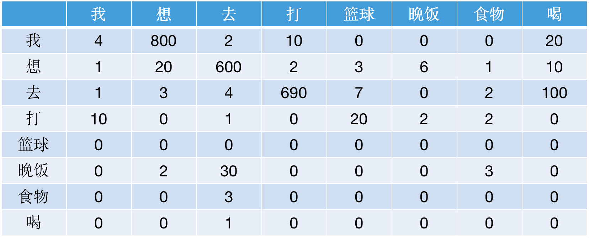
- \(C(W_{i-1})\) 的计数结果如下：
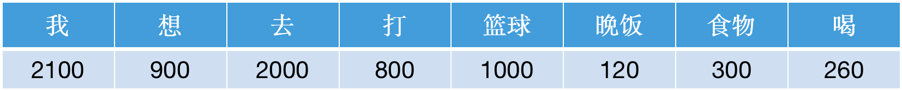
-
那么bigram语言模型针对上述语料的参数计算结果如何实现？假如，我想计算\(P(想｜我)\approx0.38\) ,计算过程如下显示：（其他参数计算过程类似） $$ P(想｜我) = \frac{C(我,想)}{C(我)} = \frac{800}{2100}\approx0.38 $$
-
如果针对这个语料库的二元模型（bigram）建立好之后，就可以实现我们的目标计算。
-
计算一个句子的概率，举例如下：
-
$$ P(我想去打篮球) = P(想｜我)*P(去｜想)*P(打｜去)*P(篮球｜打)=\frac{800}{2100}*\frac{600}{900}*\frac{690}{2000}*\frac{20}{800} \approx0.0022 $$
-
预测一句话最可能出现的下一个词汇，比如：我想去打【mask】? 思考：mask = 篮球 或者 mask = 晚饭
- 可以看出\(P(我想去打篮球) > P(我想去打晚饭)\)，因此mask = 篮球，对比真实语境下，也符合人类习惯。
N-gram语言模型的特点：
-
优点：
- 原理简单，易于理解，可解释性强。
- 参数可以直接从语料库中统计得到，训练简单。
-
缺点：
- 上下文长度受限：无法捕捉长距离依赖关系。
- 数据稀疏性：即使有平滑技术（如拉普拉斯平滑），对于未见过的 N-gram 组合，模型效果依然很差 (OOV, Out-of-Vocabulary 问题)。 在 N-gram 模型中，当一个词语组合在训练语料中从未出现过时，其词频为零，导致其概率为零,所以会采用拉普拉斯平滑，即分字分母都加上一个 常数 α，通常 α=1 。
- 泛化能力差：模型完全依赖于语料库中的词频，无法理解词语之间的语义相似性。例如，模型不知道“喜欢”和“热爱”是近义词。
1.2.2 神经网络语言模型
为了解决传统统计语言模型（如N-gram）的“数据稀疏”（即无法处理未在训练语料中出现的词组）和泛化能力弱的问题，研究者们引入了神经网络。2003年由Bengio等人提出的NNLM是这一领域的开创性工作。其核心思想是：不仅要根据前文预测下一个词，还要在这个过程中学习到词与词之间内在的联系。
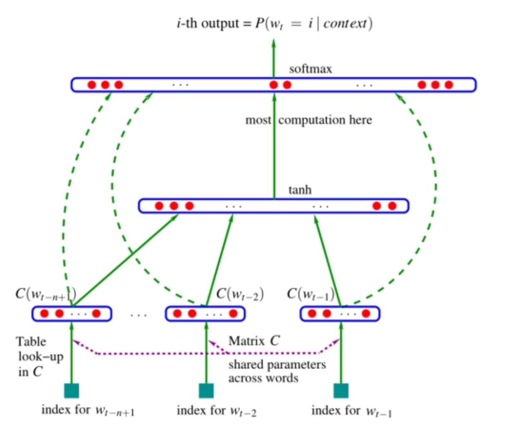
- 模型的输入：\(w_{t-n+1}, …, w_{t-2}, w_{t-1}\)就是前n-1个词。现在需要根据这已知的n-1个词预测下一个词\(w_t\)。\(C(w)\)表示\(w\)所对应的词向量.
- 网络的第一层（输入层）是将\(C(w_{t-n+1}),…,C(w_{t-2}), C(w_{t-1})\)这n-1个向量首尾拼接起来形成一个\((n-1)*m\)大小的向量，记作\(x\).
- 网络的第二层（隐藏层）就如同普通的神经网络，直接使用一个全连接层, 通过全连接层后再使用\(tanh\)这个激活函数进行处理。
- 网络的第三层（输出层）一共有\(V\)个节点 (\(V\) 代表语料的词汇)，本质上这个输出层也是一个全连接层。每个输出节点\(y_i\)表示下一个词语为 \(i\) 的未归一化log 概率。最后使用 softmax 激活函数将输出值\(y\)进行归一化。得到最大概率值，就是我们需要预测的结果。
神经网络特点：
-
优点：
- 解决了数据稀疏性：通过词向量，模型可以泛化到训练时未见过的词语组合。
- 捕捉语义相似性：语义相近的词（如“猫”和“狗”）在向量空间中的位置也相近，使得模型具有更好的泛化能力。
-
缺点：
- 上下文长度固定：与 N-gram 类似，它仍然只能处理固定长度的上下文。
- 计算复杂度高：输出层的 Softmax 计算量巨大，与词表大小成正比。
- 长距离依赖问题：后续的 RNN/LSTM 模型虽然解决了变长上下文的问题，但仍面临梯度消失/爆炸，难以有效捕捉长距离依赖。
1.2.3 基于Transformer的预训练语言模型
2017年，Google 提出的 Transformer 模型彻底改变了 NLP 领域。其核心是 自注意力机制 (Self-Attention Mechanism)，允许模型在处理一个词时，直接计算句子中所有其他词对该词的影响力，从而完美地解决了长距离依赖问题。并且可以对序列中的所有位置 并行计算，大幅提升训练速度。
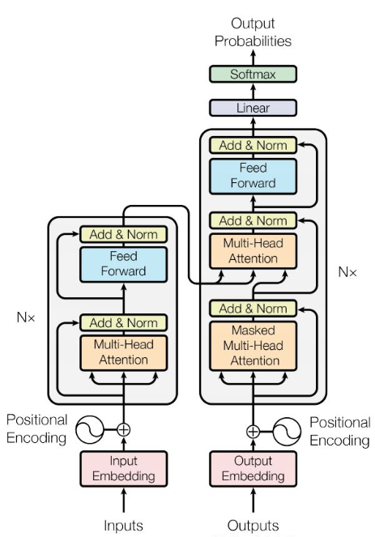
Transformer模型由一些编码器和解码器层组成（见图），学习复杂语义信息的能力强，很多主流预训练模型在提取特征时都会选择Transformer结构，并产生了一系列的基于Transformer的预训练模型，包括GPT、BERT、T5等。这些模型能够从大量的通用文本数据中学习大量的语言表示，并将这些知识运用到下游任务中，获得了较好的效果.
预训练语言模型的使用方式：
- 预训练：预训练指建立基本的模型，先在一些比较基础的数据集、语料库上进行训练，然后按照具体任务训练，学习数据的普遍特征。
- 微调：微调指在具体的下游任务中使用预训练好的模型进行迁移学习，以获取更好的泛化效果。
预训练语言模型的特点：
- 优点：更强大的泛化能力，丰富的语义表示，可以有效防止过拟合。
- 缺点：计算资源需求大，可解释性差等。
1.2.4 大语言模型
随着对预训练语言模型研究的开展，人们逐渐发现可能存在一种标度定律（Scaling Law），即随着预训练模型参数的指数级提升，其语言模型性能也会线性上升。2020年，OpenAI发布了参数量高达1750亿的GPT-3，首次展示了大语言模型的性能。
相较于此前的参数量较小的预训练语言模型，例如，3.3亿参数的Bert-large和17亿参数的GPT-2，GPT-3展现了在Few-shot语言任务能力上的飞跃，并具备了预训练语言模型不具备的一些能力。后续将这种现象称为能力涌现。例如，GPT-3能进行上下文学习，在不调整权重的情况下仅依据用户给出的任务示例完成后续任务。这种能力方面的飞跃引发研究界在大语言模型上的研究热潮，各大科技巨头纷纷推出参数量巨大的语言模型，例如，Meta公司1300亿参数量的LLaMA模型以及谷歌公司5400亿参数量的PaLM。国内如百度推出的文心一言ERNIE系列、清华大学团队推出的GLM系列，等等。这些模型的参数量极其庞大（千亿甚至万亿级别），因此被称为 大语言模型 (Large Language Model, LLM) 。
LLM通常都是具 大规模参数 （通常在十亿到万亿级别）的深度学习模型。这类模型通过在 大规模数据集 上进行训练，具备强大的泛化能力和复杂的任务处理能力，尤其在自然语言处理（NLP）、计算机视觉（CV）和多模态任务中表现突出。例如，GPT-3（1750亿参数）与传统的语言模型（如 N-gram）相比，LLM 具备以下革命性特点：
- 规模巨大 (Scale)：参数量通常超过10亿（1B），例如 GPT-3 拥有1750亿参数，PaLM 拥有5400亿参数。巨大的规模是实现强大能力的基础。
- 涌现能力 (Emergent Abilities)：当模型规模达到一定程度时，会涌现出一些意想不到的能力，如上下文学习 (In-Context Learning)、零样本/少样本任务处理 (Zero/Few-Shot Learning)、逻辑推理等，这些能力在小模型上并不存在。
- 通用性 (Generality)：LLM 不再局限于单一的 NLP 任务（如文本分类、情感分析），而是能够通过自然语言指令 (Instruction) 完成多样化的、开放式的任务，展现出通用人工智能 (AGI) 的潜力。
- 生成式 (Generative)：LLM 不仅能“理解”语言，更能“生成”流畅、连贯且富有创造性的文本内容，这也是其被称为“生成式AI”的核心原因。
大语言模型的特点：
- 优点：像“人类”一样智能，具备了能与人类沟通聊天的能力，甚至具备了使用插件进行自动信息检索的能力
- 缺点：参数量大，算力要求高、生成部分有害的、有偏见的内容等等
2 大语言模型介绍
2.1 LLM三大主流架构
原始的 Transformer 包含 编码器 (Encoder) 和 解码器 (Decoder) 两部分。在后续的发展中，逐渐演化为三大主流架构，催生了如下图所示的“模型家族树”。
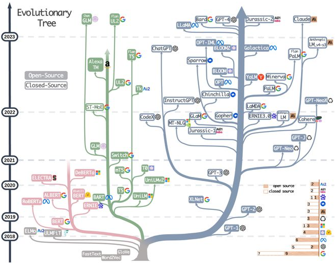
-
Encoder-Only架构
-
代表模型：BERT, RoBERTa, DeBERTa
-
特点：能够同时“看到”整个输入句子的上下文（双向理解），极其擅长 深度理解 。
-
适用任务：文本分类、情感分析、命名实体识别等需要对文本进行全面理解的任务。
-
-
Encoder-Decoder
-
代表模型：T5, BART, Flan-T5
-
特点：保留了原始 Transformer 的完整结构，适用于将一个文本序列转换为另一个文本序列的 序列到序列 任务。
-
适用任务：机器翻译、文本摘要、问答等。
-
-
Decoder-Only架构
-
代表模型：GPT 系列, PaLM, LLaMA, ChatGPT
-
特点：自回归（Auto-regressive）模型，根据前面的文本预测下一个词，极其擅长 内容生成 。
-
适用任务：文章写作、聊天对话、代码生成等需要创意和流畅表达的任务。
-
2.2 LLM主流任务类型
本部分从“用户要用模型来做什么”的角度出发，对 LLM 进行功能性分类。这种分类方式与模型架构紧密相关，因为特定的架构通常最适合执行特定的任务。
以下是详细的分类表格：
| 类别 | 核心能力与描述 | 关联架构 | 典型应用场景 | 代表模型 |
|---|---|---|---|---|
| 生成式模型 | 根据上文创作全新的文本内容。 | 仅解码器decoer | 即生成任务：对话机器人、内容写作、代码生成 | GPT 系列, LLaMA, PaLM |
| 理解式/嵌入式模型 | 将文本转换为“语义指纹”向量，用于快速召回。 | 仅编码器 (双塔) encoder | 即语义理解任务：语义搜索（召回阶段）、文本聚类、推荐系统 | BERT, RoBERTa, BGE |
| 判别式/分类模型 | 对文本进行分析并输出一个明确的标签或分数。 | 仅编码器 encoder | 即分类模型任务：情感分析、意图识别、文本匹配 | BERT, ERNIE, ALBERT |
| 重排/精准排序模型 (Rerank) | 对“查询-文档”对进行深度相关性打分，以优化排序。 | 仅编码器 (交叉) | 即排序任务：搜索引擎精准排序、RAG 系统优化、答案选择 | Cohere Rerank, bge-reranker-large, LongLM |
| 序列到序列模型 | 将一个输入文本序列转换为另一个输出文本序列。 | 编码器-解码器 | 即文本转换任务：机器翻译、文本摘要、生成式问答 | T5, BART, Flan-T5 |
2.3 LLM训练
2.3.1 大模型训练流程
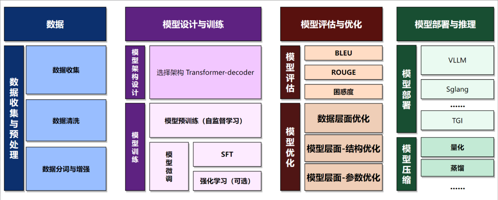
- 其中 大模型的训练方式及产生的模型 包括：
| 阶段 | 方法 | 产生的模型类型 | 特点 |
|---|---|---|---|
| 预训练 | 在大规模数据集上进行无监督或自监督学习，学习通用特征 | 基础模型 (Base) | 通用知识强，但不会对齐 |
| 监督微调 | 在特定任务数据集上进行监督学习，优化模型性能。 | 指令微调模型 (SFT) | 能理解指令和任务 |
| 对齐与增强 | 训练奖励模型、用人类反馈做强化学习（如PPO/DPO）让模型更符合人类偏好与安全要求 | 对齐模型 (Chat/Aligned) | 更安全、更符合人类偏好 |
| 任务/领域微调 | LoRA/PEFT/全参微调 | 专用模型 (Domain/Task) | 适应行业和特定任务 |
2.3.2 大模型训练细节
以下两张图是关于大模型规模、算力、训练数据以及时间信息表格：
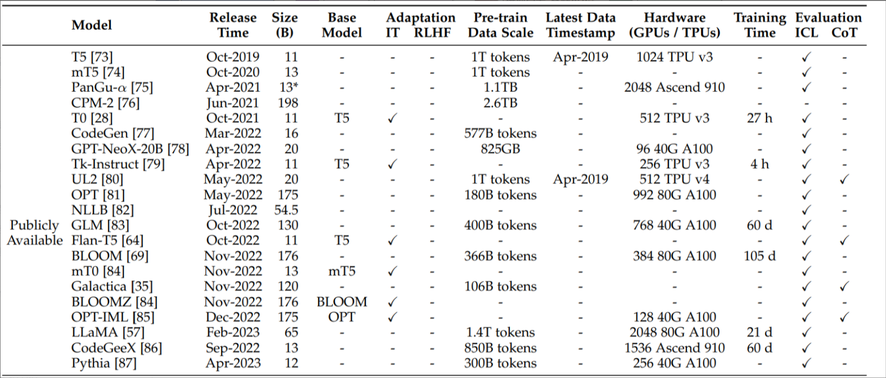
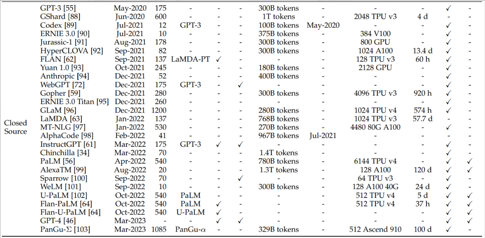
拓展：模型预训练时常用数据集——
- BookCorpus：BookCorpus将 11,000 本未出版书籍的爬取数据转化为一个 9.85 亿字的数据集。它最初创建的目的是将书籍中的故事情节与电影解读进行匹配。该数据集曾用于训练 RoBERTA、XLNET 和 T5 等法学硕士 (LLM)。
- C4：（Cleaned Common Crawl Corpus）是从Common Crawl数据集中精选并清理过的一个子集。Common Crawl数据集包含从数十亿个网页中提取的数 TB 级原始网络数据。它每月都会发布爬虫获取的新数据文件。包括 GPT-3、LLaMA、OpenLLaMa 和 T5 在内的多个大型语言模型都使用 CommonCrawl 进行了训练。
- Wikipedia：Wikipedia维基百科数据集由维基百科网站清理后的文本数据整理而成，涵盖所有语言版本。默认的英语维基百科数据集包含 19.88 GB 的海量完整文章示例，有助于完成语言建模任务。该数据集曾用于训练 Roberta、XLNet 和 LLaMA 等大型模型。
- ROOTS：ROOTS是一个 1.6TB 的多语言数据集，涵盖 59 种语言的文本。该数据集旨在训练 BigScience 大型开放科学开放获取多语言 (BLOOM) 语言模型。ROOTS 使用来自 Common Crawl、GitHub Code 和其他众包项目的经过大量去重和过滤的数据。
2.3.3 大模型权重的存储
大模型训练之后，会将模型进行保存。实际大模型权重的存储格式多种多样，每种格式都有其独特的特点和适用场景。以下是一些常见的大模型权重存储格式：
| 格式分类 (常见扩展名) | 一句话概括 | 主要优点 | 最适合的场景 | 关键点 / 备注 |
|---|---|---|---|---|
| PyTorch 格式 (.pth, .pt, .bin) | PyTorch框架的“官方标配”，训练和研究时最常用。 | 灵活，能保存任何东西，在PyTorch生态里用起来最顺手。 | 模型开发与训练：自己从头开始训练模型或做学术研究。 | 存在安全风险，加载不可信文件可能执行恶意代码。 |
| Safetensors 格式 (.safetensors) | Hugging Face推出的“安全卫士”。 | 绝对安全，加载速度飞快，是未来的趋势。 | 分享与下载模型：从网上下载别人训练好的模型时，这是首选。 | 只存储纯粹的权重数据，不包含任何可执行代码。 |
| GGUF 格式 (.gguf) | 在普通电脑CPU上跑大模型的“平民神器”。 | 对CPU特别友好，把模型所有信息打包成一个文件，方便管理。 | 本地化部署：在没有高端GPU的个人电脑或笔记本上运行大模型。 | 必须搭配量化模型才能发挥优势。技术上能存非量化模型，但这样做没意义且不会变快。 |
| 量化格式 (.gguf, ...q4_0.bin) | 模型的“减肥版”，通过降低精度给模型瘦身。 | 大幅减小模型体积和内存占用，让低功耗设备也能运行。 | 边缘计算：在手机、树莓派等计算资源非常有限的设备上部署模型。 | 量化是一种技术，GGUF 是承载这种技术最流行的格式之一。 |
| 分片格式 (...00001-of-00002.bin) | “化整为零”，把一个巨大到存不下的模型切成几块存放。 | 解决了单个文件过大的问题，便于存储和网络传输。 | 超大模型管理：处理和加载那些几十、上百GB的巨型模型。 | 通常是 .bin 或 .safetensors 格式，只是被切割成了多个部分。 |
| ONNX 格式 (.onnx) | 模型界的“通用护照”，让模型在不同框架间自由穿行。 | 跨平台、跨框架，一次转换，处处可用。 | 跨平台部署：把PyTorch训练的模型，部署到用TensorFlow或其他框架的环境中。 | 转换过程有时会遇到兼容性问题，需要调试。 |
| TensorFlow 格式 (.pb, .ckpt, .h5) | TensorFlow框架的“自家全家桶”，生态完整。 | 从训练到部署一条龙服务，功能全面。 | TensorFlow重度用户：全程使用TensorFlow生态进行模型开发和部署。 | 与 PyTorch 生态不直接兼容，需要转换 |
TIPS:
每种格式的选择需根据具体应用场景（如安全性、推理效率、跨框架兼容性等）进行权衡。
Safetensors因其安全性和高效性正逐渐成为主流推荐格式，尤其在Hugging Face生态中。
量化格式（如GGUF和4-bit/8-bit量化）在边缘计算和资源受限环境中应用广泛，但需注意精度损失
2.3.4 大模型精度类型
| 精度类型 | 描述 | 优点 | 缺点 | 适用场景 | 精度 | 数值范围 |
|---|---|---|---|---|---|---|
| FP32（单精度浮点数） | 32位浮点数，IEEE 754标准，高精度浮点表示 | 高精度，广泛硬件支持，适合复杂任务 | 存储和计算开销大，推理速度慢 | 科学研究、复杂模型训练 | 高，约7位十进制精度，误差极小 | ±1.18×10⁻³⁸ 至 ±3.4×10³⁸ |
| FP16（半精度浮点数） | 16位浮点数，减少一半存储和计算需求 | 推理速度快，内存占用低，精度损失较小 | 可能溢出或下溢，需硬件支持 | GPU加速推理，内存受限环境 | 中，约3-4位十进制精度，适合大多数任务 | ±6.1×10⁻⁵ 至 ±6.55×10⁴ |
| BF16（Brain Float 16） | 16位浮点数，指数范围与FP32相同，精度稍低 | 保持大动态范围，适合深度学习 | 精度低于FP16，需专用硬件（如TPU） | 深度学习推理与训练，硬件优化 | 中低，约2-3位十进制精度 | ±1.18×10⁻³⁸ 至 ±3.4×10³⁸ |
| INT8（8位整数） | 8位定点整数，通过量化映射浮点值 | 推理速度大幅提升，内存占用极低 | 精度损失较大，高维度数据表现差 | 边缘设备、移动设备 | 低，量化误差明显，依赖校准 | -128 至 127（有符号） 0 至 255（无符号） |
| 低比特量化（如2-bit、4-bit） | 极低位定点量化，极度压缩模型 | 极低存储和计算开销，超高推理速度 | 精度严重下降，数学任务表现差 | 超轻量推理，极低资源设备 | 极低，量化误差大，适合简单任务 | 4-bit：-8 至 7（有符号） 2-bit：-2 至 1（有符号） |
| 混合精度量化 | 权重用低精度（如INT8），梯度/偏差用高精度（如FP32） | 平衡精度与效率，适合复杂模型 | 实现复杂，需硬件和框架支持 | 高性能推理与训练，混合硬件环境 | 中高，权重低精度，整体精度较高 | 依赖组合（如INT8：-128 至 127，FP32：±1.18×10⁻³⁸ 至 ±3.4×10³⁸） |
| 动态量化 | 推理时动态调整精度，避免信息损失 | 精度较高，灵活性强 | 推理速度略慢，计算开销增加 | 精度敏感的动态推理场景 | 中高，接近FP16/INT8 | 动态变化（如FP16或INT8范围） |
| 静态量化 | 预先校准并固定低精度权重 | 精度较高，推理效率高 | 需额外校准，计算资源需求高 | 稳定推理，资源充足环境 | 中，优于无校准INT8 | 固定（如INT8：-128 至 127） |
-
精度与数值范围关系：
-
高精度（如FP32）提供更细腻的数值表示，误差小，适合复杂计算。
-
低精度（如INT8、4-bit）范围受限，量化误差大，适合简单任务或资源受限场景。
-
混合精度通过高精度梯度弥补低精度权重的不足，整体精度较高。
-
-
应用场景与硬件：
-
FP32/FP16：GPU/CPU广泛支持，适合高精度或加速推理。
-
BF16：需专用硬件（如TPU、NVIDIA A100），优化深度学习。
-
INT8/低比特量化：边缘设备优化，需框架支持（如TensorRT）。
-
混合/动态/静态量化：需硬件和框架协同（如PyTorch AMP、ONNX Runtime）。
-
2.4 LLM使用
LLM分闭源大模型和开源大模型两大类，前者可以通过在线交互或者API的形式调用，后者则可以直接将模型下载下来，然后进行私有化部署使用。
闭源大模型使用便捷、性能稳定且往往具备最新功能，但依赖厂商服务，成本受限于调用费用，数据也可能存在隐私和安全风险；开源大模型可自由下载和私有化部署，具备灵活性和可控性，能更好地满足定制化和数据安全需求，但部署和优化需要较高的算力与技术投入。
2.4.1 闭源大模型使用
下面以千问大模型为例进行讲解。
（1）接入通义千问大模型
- 进入阿里云的百炼大模型平台， 完成 注册，登录，实名（使用支付宝扫一下） 。

- 创建 API Key

- 安装 sdk 测试代码
# 如果运行失败，您可以将pip替换成pip3再运行 pip install openai
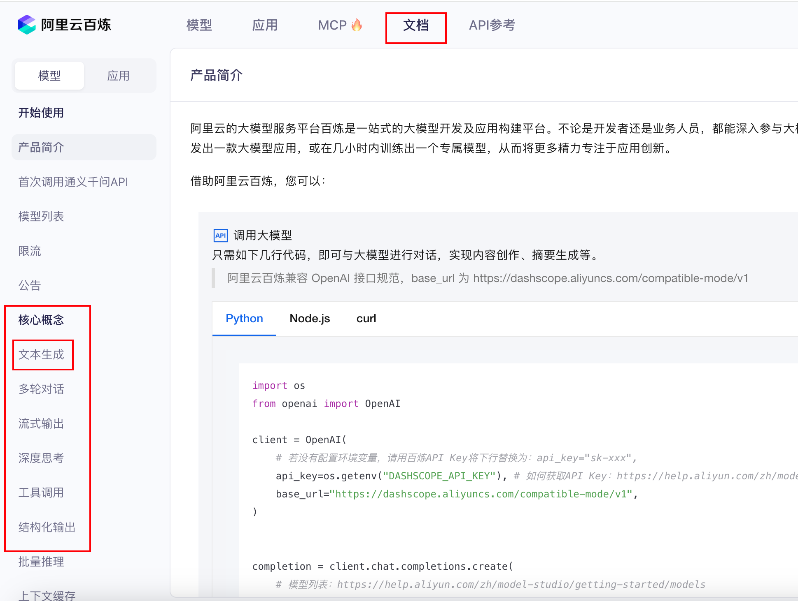
-
验证
复制上面的调试代码：
Pythonfrom openai import OpenAI client = OpenAI( api_key="<你的 API Key>", base_url="https://dashscope.aliyuncs.com/compatible-mode/v1", ) completion = client.chat.completions.create( # 模型列表：https://help.aliyun.com/zh/model-studio/getting-started/models model="qwen-plus", # qwen-plus 属于 qwen3 模型，如需开启思考模式，请参见：https://help.aliyun.com/zh/model-studio/deep-thinking messages=[ {'role': 'system', 'content': 'You are a helpful assistant.'}, {'role': 'user', 'content': '你是谁？'} ] ) print(completion.choices[0].message.content)
上面这种方式会直接暴露API_KEY，不安全，并且不方便维护。我们可以使用dotenv进行优化。dotenv 是一个用于从 .env 文件中加载环境变量的 Python 库。这在开发过程中特别有用，因为它允许你存储敏感信息（如 API 密钥、数据库密码等）而不需要将它们硬编码到你的代码中。使用 dotenv 可以保持你的代码更加安全和易于维护。参考链接：https://blog.csdn.net/2301_80410418/article/details/139323759
安装：
pip install python-dotenv
使用：
from dotenv import load_dotenv import os # 默认情况下，load_dotenv会查找并加载当前工作目录下的.env文件。 load_dotenv() # 如果想指定一个不同的文件或路径，可以这样做： load_dotenv(dotenv_path='/path/to/your/.env') # 现在可以使用 os.getenv 或 os.environ 获取变量 database_url = os.getenv('DATABASE_URL') secret_key = os.getenv('SECRET_KEY') database_url = os.environ.get('DATABASE_URL') secret_key = os.environ.get('SECRET_KEY') debug = os.getenv('DEBUG', 'false').lower() == 'true' print(f"Database URL: {database_url}") print(f"Secret Key: {secret_key}") print(f"Debug Mode: {debug}")
接下来，使用dotenv方式改造qwen调用接口：
- 创建.env文件
api_key=<你的 API Key> base_url=https://dashscope.aliyuncs.com/compatible-mode/v1 model_name=qwen-plus
-
调用代码
Pythonfrom openai import OpenAI from dotenv import load_dotenv import os # 加载 .env 文件 load_dotenv() client = OpenAI( api_key=os.getenv("DASHSCOPE_API_KEY"), base_url=os.getenv("DASHSCOPE_BASE_URL") ) completion = client.chat.completions.create( # 模型列表：https://help.aliyun.com/zh/model-studio/getting-started/models model=os.getenv("DASHSCOPE_MODEL_NAME"), # qwen-plus 属于 qwen3 模型，如需开启思考模式，请参见：https://help.aliyun.com/zh/model-studio/deep-thinking messages=[ {'role': 'system', 'content': 'You are a helpful assistant.'}, {'role': 'user', 'content': '你是谁？'} ] ) print(completion.choices[0].message.content)
（2）角色与作用
在大语言模型中，user、assistant、system 是三种核心角色，它们的定位和功能不同，共同构成对话的上下文结构。以下是具体区别和用途：
1）system（系统角色）
- 定位：控制对话的全局方向和模型的行为模式
- 作用： 设定上下文：定义对话的背景、目标或规则（例如“你是一个专业翻译，只回答与翻译相关的问题”）。 调整风格：指定回复的语气（严肃、幽默）、格式（分点、Markdown）或内容限制（避免敏感话题）。 长期控制：在对话中持续影响模型的输出（即使后续对话中没有重复指令）。
- 典型场景： 初始化对话时设定角色（如医生、律师、代码助手）。 限制模型的回答范围（如“仅用英文回答”）。 设定复杂任务的流程（如分步骤完成任务）。
2）user（用户角色）
- 定位：代表真实用户输入，是驱动对话的核心。
- 作用： 提出问题或请求（如“帮我写一首关于夏天的诗”）。 提供补充信息（如“上一句翻译成法语”）。 修正模型行为（如“用更简单的语言解释”）。
- 典型场景： 直接交互：用户提问、追问或反馈。 间接控制：通过用户消息调整模型输出（例如在消息中附加指令）。
3）assistant（助手角色）
- 定位：模型生成的回复内容。
- 作用： 回答问题：基于上下文生成符合用户需求的回复。 自我修正：在后续对话中根据用户反馈调整回答（如“抱歉，之前的回答有误，正确的是…”）。 遵循指令：执行 system 或 user 指定的规则（如分点回答、使用特定格式）。
- 典型场景： 直接生成文本、代码、建议等。 通过历史 assistant 消息实现多轮对话连贯性。
4）三者间关系
-
System 设定框架 → User 提供具体输入 → Assistant 生成回复。
-
指令层级：系统或开发者指令用于定义最高层约束，用户消息描述当前任务，assistant 消息保存历史回答。同一层级出现冲突时，通常以更具体、更新且不违反上层约束的指令为准。
-
示例：
System: 你是一位营养学家，用简洁的中文回答。 User: 香蕉适合减肥吗？ Assistant: 香蕉富含膳食纤维，适量食用有助于增加饱腹感...
2.4.2 开源大模型使用
（1）推理资源评估与计算
在部署模型之前，可靠评估所需资源（尤其是显存 VRAM）至关重要。这能帮助我们选择合适的模型或硬件，避免因资源不足导致的部署失败。
模型推理时的显存占用主要由以下三部分构成：
-
模型权重 (Model Weights): 加载模型本身参数所需的显存。
-
KV Cache: 存储模型计算过程中的键值对缓存，用于加速生成过程。这是最主要的可变开销。
-
激活值 (Activations): 模型在计算过程中产生的中间张量。
总推理显存占用估算公式：Total VRAM ≈ VRAM_weights + VRAM_kv_cache + VRAM_activations
计算示例如下——
Step 1: 计算模型权重显存 (VRAM_weights)
权重的显存占用取决于模型的参数量和参数精度。
公式: VRAM_weights = 参数量 × 单个参数大小。
比如Qwen2.5-3B-Instruct 参数量: 3 Billion (30亿) 精度: 通常使用半精度 (FP16)，每个参数占 2 Bytes 计算: 3 * 10^9 * 2 Bytes = 6 * 10^9 Bytes = 6 GB 所以，模型权重本身大约需要 6 GB 显存。
Step 2: 计算 KV Cache 显存 (VRAM_kv_cache)
LLM 生成文本是一个“自回归”的过程，即生成第 N 个词，需要依赖前面 N-1 个词的信息。这个依赖关系是通过 Transformer 架构中的“自注意力（Self-Attention）”机制实现的。
假设你正在用模型逐字生成一句话：生成第一个 token 时，模型要计算它的 Q、K、V。生成第二个 token 时，模型不仅要计算新的 Q、K、V，还得重新计算第一步里所有 token 的注意力。生成第三个 token 时，又要重新算前两个 token 的注意力……这样，每生成一个新 token，模型都在重复计算历史部分，效率会非常慢。
KV Cache 就是用来避免重复计算的。 当第一个 token 生成时，模型会把它的 K 和 V 存到缓存里。当生成第二个 token 时，只需要算第二个 token 的 K、V，然后直接和缓存里的历史 K、V 拼起来，就能做注意力计算。这样，旧的部分（前面生成的 token）就不用反复算了。
总结来说，KV Cache 是在大模型推理阶段，缓存历史 token 的 Key 和 Value 向量，从而避免重复计算，显著提升生成速度的优化机制。它本质上是一种用空间（显存）换时间（计算速度）的策略。
KV Cache 是推理过程中最消耗显存的部分，尤其是在处理长序列或高并发请求时。
公式: VRAM_kv_cache = (batch_size × seq_len × num_layers × 2 × hidden_size) × Bytes_per_element
batch_size: 并发请求数seq_len: 每个请求的序列长度（prompt + generated tokens）。num_layers: 模型的层数，即Decoder层的数量。2: 分别代表 Key 和 Value。hidden_size: 隐藏层维度。Bytes_per_element: 通常是 2 (FP16)。
比如Qwen2.5-3B-Instruct 假设 batch_size = 8 (8个并发请求) 假设平均 seq_len = 2048 Qwen2-3B 模型通常有 num_layers ≈ 24, hidden_size ≈ 2048 (这些是典型值，具体需查模型配置) 计算: 8 * 2048 * 24 * 2 * 2048 * 2 Bytes ≈ 3.2 GB 所以，对于 8个并发、序列长度为2048的请求，KV Cache 大约需要 3.2 GB 显存。
Step 3: 估算激活值显存 (VRAM_activations)
激活值指的是输入经过某一层网络（比如线性层、注意力层、前馈层）计算后的 中间结果。这部分显存与模型架构和序列长度有关，计算复杂。但在现代推理框架（如 vLLM）中，由于其高效的内存管理，这部分开销相对固定且可控，通常可以估算为 1-2 GB。
Step4：最终资源推演
综合以上计算，我们来推演部署 Qwen2.5-3B-Instruct 在不同并发场景下的资源需求。
场景1：单个用户，中等长度对话 batch_size = 1, seq_len = 2048 VRAM_weights = 6 GB VRAM_kv_cache = 1 * 2048 * 24 * 2 * 2048 * 2 Bytes ≈ 0.4 GB VRAM_activations ≈ 1 GB 总计: 6 + 0.4 + 1 = 7.4 GB 结论: 一张 8GB 的消费级显卡（如 RTX 3070/4060）即可满足。 场景2：中等并发，长文本处理 batch_size = 16, seq_len = 4096 VRAM_weights = 6 GB VRAM_kv_cache = 16 * 4096 * 24 * 2 * 2048 * 2 Bytes ≈ 12.8 GB VRAM_activations ≈ 2 GB 总计: 6 + 12.8 + 2 = 20.8 GB 结论: 需要一张 24GB 的专业级显卡（如 RTX 3090/4090）
（2）模型下载
1）使用Hugging Face下载
Hugging Face 是一个领先的开源人工智能平台，主要以提供海量的预训练机器学习模型（尤其是自然语言处理模型，如 Transformers）和数据集而闻名，支持开发者便捷地分享、发现和使用模型，推动了AI技术的开放与普及。官网：https://huggingface.co/
如果想进行模型下载，需要网关或者国内镜像，操作相对复杂。
如果企业中必须使用Hugging Face下载，可以参考下面这两个链接中的操作。
https://blog.csdn.net/a61022706/article/details/134887159
https://blog.csdn.net/T752462536/article/details/133382427
2）使用魔搭社区下载【推荐】
魔搭（ModelScope）社区是由阿里云推出的模型开放平台，致力于提供大量经过优化和验证的机器学习与深度学习模型，支持模型的发现、学习、使用和二次开发，旨在降低AI技术的应用门槛，促进模型的共享与创新。官网：https://modelscope.cn/my/overview
在模型库中搜索想找的模型，然后点击下载，即可按照说明进行下载。
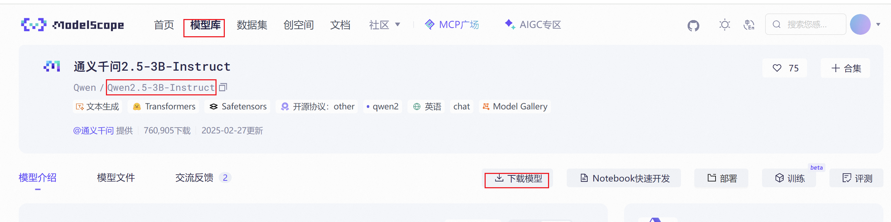
示例：
#安装modelscope pip install modelscope # 在本地创建<本地路径>，然后下载模型到本地 modelscope download --model Qwen/Qwen2.5-3B-Instruct --local_dir <本地路径>
3）通过官网或github下载
可以找到模型开源的网址进行下载。优点是可以找到最先的模型，可以了解模型的动态。缺点是一些历史版本模型、不同参数的模型、不同量化的模型可能不全。
（3）模型使用
模型下载完成后，可以在服务器、GPU 集群或本地电脑上运行，利用框架（如 Transformers、vLLM、FastChat 等）加载模型。
我们下载的模型是一个经过SFT后的模型，可以按照官网使用方式进行快速使用： 如：https://huggingface.co/Qwen/Qwen2.5-3B-Instruct
from transformers import AutoModelForCausalLM, AutoTokenizer # 模型路径（本地存放的模型） model_name = r"<本地路径>" # 加载预训练好的因果语言模型（CausalLM） # 参数说明： # - torch_dtype="auto"：自动选择数据类型（如float16/float32），节省显存 # - device_map="auto"：自动将模型映射到可用的GPU/CPU上 model = AutoModelForCausalLM.from_pretrained( model_name, torch_dtype="auto", device_map="auto" ) # 加载对应的分词器（Tokenizer） tokenizer = AutoTokenizer.from_pretrained(model_name) # 用户输入的提示词（prompt） prompt = "Give me a short introduction to large language model." # 构建对话格式的输入 # 这里是一个多轮对话的例子： # - system：设定模型的身份或规则 # - user：用户的输入 messages = [ {"role": "system", "content": "You are Qwen, created by Alibaba Cloud. You are a helpful assistant."}, {"role": "user", "content": prompt} ] # 将对话转换成模型可识别的文本格式 # - tokenize=False 表示先不进行分词，只生成纯文本 # - add_generation_prompt=True 表示在末尾加上生成提示，引导模型继续生成 text = tokenizer.apply_chat_template( messages, tokenize=False, add_generation_prompt=True ) # 将文本编码为张量，并放到与模型相同的设备（CPU/GPU）上 model_inputs = tokenizer([text], return_tensors="pt").to(model.device) # 调用模型进行文本生成 # - max_new_tokens=512 表示最多生成 512 个新 token generated_ids = model.generate( **model_inputs, max_new_tokens=512 ) # 去掉输入部分，只保留模型新生成的内容 generated_ids = [ output_ids[len(input_ids):] for input_ids, output_ids in zip(model_inputs.input_ids, generated_ids) ] # 解码生成的 token 序列，转换成可读文本 # - skip_special_tokens=True 表示跳过特殊符号（如<eos>、<pad>） response = tokenizer.batch_decode(generated_ids, skip_special_tokens=True)[0] # 输出模型的回答 print(response)
3 语言模型的评估指标
3.1 BLEU
BLEU：BLEU （双语评估替补）分数是评估一种语言翻译成另一种语言的文本质量的指标。用于评估生成文本的“正确性”和“流畅性”。
核心思想：一篇好的翻译，其用词和短语应该与专业译员的翻译（参考译文）有很高的重合度。BLEU 通过计算 生成文本 与 参考文本 之间 N-gram 的精确率 (Precision) 来衡量这种重合度。BLEU 的分数取值范围是 0～1，分数越接近1，说明翻译的质量越高。
BLEU有许多变种，根据n-gram可以划分成多种评价指标，常见的评价指标有BLEU-1、BLEU-2、BLEU-3、BLEU-4四种，其中n-gram指的是连续的单词个数为n，BLEU-1衡量的是单词级别的准确性，更高阶的BLEU可以衡量句子的流畅性.实践中，通常是取N=1~4，然后对进行加权平均。
下面举例说计算过程：
任务：评估一句机器翻译的质量。
原文: "今天是美好的一天"
生成译文 (Candidate): "it is a nice day today"
参考译文 (Reference): "today is a nice day"
-
基本步骤：
-
计算精确率。
分别计算candidate句和reference句的N-grams模型，然后统计其匹配的个数，计算精确率。
公式：candidate和reference中匹配的 n−gram 的个数 /candidate中n−gram 的个数
-
计算短句惩罚 (Brevity Penalty, BP)。
如果生成文本长度
c大于等于参考文本长度r，则BP=1；否则BP = exp(1 - r/c)。exp: 自然指数函数 e^x。本例Candidate 长度c = 6，Reference 长度r = 5，因为c大于r，所以BP = 1。 -
计算最终 BLEU 分数:
- 其中
N: 计算 n-gram 精确率时所考虑的最大n值，通常N=4。 w_n: 第n-gram 的权重，通常为平均权重。p_n: n-gram 精确率
- 其中
-
-
使用1-gram进行匹配
candidate: {it, is, a, nice, day, today}
reference: {today, is, a, nice, day}
结果:
其中{today, is, a, nice, day}匹配，所以精确率为5/6
所以，BLEU_1=⅚≈0.8333
- 使用2-gram进行匹配
candidate: {it is, is a, a nice, nice day, day today}
reference: {today is, is a, a nice, nice day}
结果:
其中{is a, a nice, nice day}匹配，所以精确率为3/5
BLEU-2 采用权重 (0.5, 0.5)，则：BLEU_2=BP×exp(0.5 lnP1+0.5 lnP2)=1×exp(0.5 ln0.8333+0.5 ln0.6) ≈ 0.707
- 使用3-gram进行匹配
candidate: {it is a, is a nice, a nice day, nice day today}
reference: {today is a, is a nice, a nice day}
结果:
其中{is a nice, a nice day}匹配，所以精确率为2/4
BLEU-3 采用权重 (⅓, ⅓, ⅓)，则：BLEU_3=BP×exp(⅓ lnP1+⅓ lnP2+⅓ lnP3)≈0.63
- 使用4-gram进行匹配
candidate: {it is a nice, is a nice day, a nice day today}
reference: {today is a nice, is a nice day}
结果:
其中{is a nice day}匹配，所以精确率为1/3
BLEU-4 采用权重 (¼, ¼, ¼, ¼) , 则 BLEU_4=BP×exp(¼ lnP1+¼ lnP2+¼ lnP3+¼ lnP4)≈0.537
python代码实现：
from nltk.translate.bleu_score import sentence_bleu def cumulative_bleu(reference, candidate): bleu_1_gram = sentence_bleu(reference, candidate, weights=(1, 0, 0, 0)) bleu_2_gram = sentence_bleu(reference, candidate, weights=(0.5, 0.5, 0, 0)) bleu_3_gram = sentence_bleu(reference, candidate, weights=(0.33, 0.33, 0.33, 0)) bleu_4_gram = sentence_bleu(reference, candidate, weights=(0.25, 0.25, 0.25, 0.25)) return bleu_1_gram, bleu_2_gram, bleu_3_gram, bleu_4_gram generated_text = "it is a nice day today" reference_texts = ["today is a nice day"] # 把字符串转成 tokens 列表（注意 references 要是 list of token-lists） cand_tokens = generated_text.split() # -> ["it","is","a","nice","day","today"] ref_tokens = [reference_texts[0].split()] # -> [["today","is","a","nice","day"]] # 计算 Bleu 指标 c_bleu = cumulative_bleu(ref_tokens, cand_tokens) # 打印结果 print("The Bleu score is:", c_bleu) # The Bleu score is: (0.8333333333333334, 0.7071067811865476, 0.63287829698514, 0.537284965911771)
3.2 ROUGE
ROUGE指标是在机器翻译、自动摘要、问答生成等领域常见的评估指标。用于衡量信息覆盖度。ROUGE通过将模型生成的摘要或者回答与参考答案（一般是人工生成的）进行比较计算，得到对应的得分。
核心思想：与强调“精确性”的 BLEU 不同，ROUGE 关注的是 召回率 (Recall) 。它衡量的是，一篇 “标准答案文本“（Reference） 中的要点 ，有多少被你的 模型生成的文本（Candidate）给覆盖 了。
ROUGE分为四种方法：ROUGE-N, ROUGE-L, ROUGE-W, ROUGE-S.
下面举例说计算过程（这里以ROUGE_N为例）：
注意：ROUGE-N 最初提出的时候，默认是召回率 (Recall)，因为在自动摘要场景下，系统更关心“参考答案里的信息有没有被覆盖到”。 但在实际应用中，精确率 (Precision) 和 F1 值 也常常会一起计算。
-
基本步骤：
- Rouge-N实际上是将模型生成的结果和标准结果按N-gram拆分后，计算召回率、精确率和F1值
-
假设模型生成的文本candidate和一个参考文本reference如下：
candidate: it is a nice day today reference: today is a nice day
- 使用ROUGE-1进行匹配
candidate: {it, is, a, nice, day, today}
reference: {today, is, a, nice, day}
结果: 其中{today, is, a, nice, day}匹配，所以召回率为5/5=1,精确率为5/6，F1值为 2X(1 * 5/6)/(1 + 5/6)=10/11。
- 使用ROUGE-2进行匹配
candidate: {it is, is a, a nice, nice day, day today}
reference: {today is, is a, a nice, nice day}
结果: 其中{is a, a nice, nice day}匹配，所以召回率为3/4=0.75,精确率为3/5=0.6，F1值为 2X(0.75 * 0.6)/(0.75 + 0.6)=0.667。
- 使用ROUGE-L进行匹配：基于 最长公共子序列 (LCS, Longest Common Subsequence) 的指标
先找 最长公共子序列（不要求连续，但顺序要一致），结果为 is a nice day，长度为4
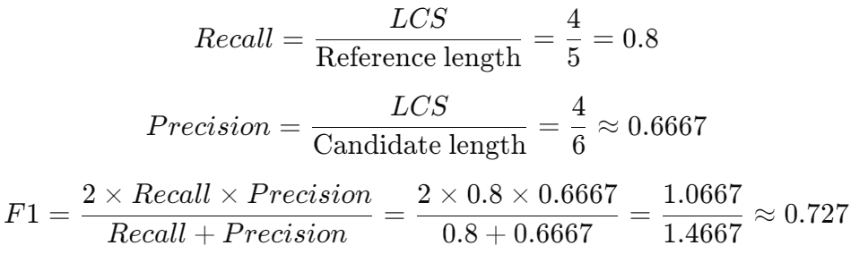
通过类似的方法，可以计算出其他ROUGE指标（如ROUGE-2、ROUGE-L、ROUGE-S）的评分，从而综合评估系统生成的文本质量。
python代码实现：
from rouge import Rouge # 生成文本 generated_text = "it is a nice day today" # 参考文本列表 reference_text = "today is a nice day" # 计算 ROUGE 指标 rouge = Rouge() scores = rouge.get_scores(generated_text, reference_text) print(scores) # [{'rouge-1': {'r': 1.0, 'p': 0.8333333333333334, 'f': 0.9090909041322315}, 'rouge-2': {'r': 0.75, 'p': 0.6, 'f': 0.6666666617283951}, 'rouge-l': {'r': 0.8, 'p': 0.6666666666666666, 'f': 0.7272727223140496}}]
3.3 PPL
困惑度（Perplexity, PPL）用来度量一个概率分布或概率模型预测样本的好坏程度。
PPL基本思想：一个好的语言模型，在预测下一个词时，应该给予正确答案更高的概率。困惑度衡量的就是模型在预测下一个词时的不确定性或“困惑”程度，本质上是对概率分布质量的评估。困惑度越低，说明模型对句子的预测越有信心，模型性能越好。
- 基本公式：
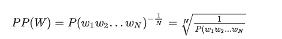
或者
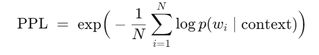
由公式可知，句子概率越大，语言模型越好，迷惑度越小。
- 案例
假设测试序列是：I love NLP
模型预测概率：
P(I)=0.2
P(love∣I)=0.1
P(NLP∣I,love)=0.25
则，PPL=(0.2×0.1×0.25) ^(-⅓)=(0.005) ^(-⅓)≈5.85。
注意：PPL 的绝对值高度依赖于词典大小和数据集的复杂度，因此没有统一的“好坏”标准，只在相同数据集上进行比较才有意义。
python代码实现：
# 定义语料库
sentences = [
['I', 'have', 'a', 'pen'],
['He', 'has', 'a', 'book'],
['She', 'has', 'a', 'cat']
]
# 定义语言模型
unigram = {
'I': 1/12,
'have': 1/12,
'a': 3/12,
'pen': 1/12,
'He': 1/12,
'has': 2/12,
'book': 1/12,
'She': 1/12,
'cat': 1/12
}
# 计算困惑度
sentence_prob = 1
length = 0
for sentence in sentences:
for word in sentence:
sentence_prob *= unigram[word]
length += 1
perplexity = sentence_prob**(-1/length)
print('困惑度为：', perplexity) # 8.1232
3.4 Benchmark
Benchmark，基准。在 LLM 和 NLP 领域，通常指一个标准化数据集或任务集合，用于评估模型性能。包括：
数据集：提供输入数据、标签或参考答案。这是基准的基础，用于训练/测试模型。
任务定义：指明确描述要解决的问题类型（如分类、生成、推理），包括输入/输出格式和规则。这确保所有模型在相同任务上比较。
评估指标（Evaluation Metrics）：量化模型性能的标准，如 Accuracy（准确率）、F1-score（精确率与召回率的调和平均）或 BLEU（用于生成任务）等提供客观分数。
业界主流大模型评测基准可以访问如下链接：https://www.datalearner.com/benchmarks
对模型进行评估时，可以使用一些评估工具，如 lm-evaluation-harness。lm-evaluation-harness 是 EleutherAI 开源的一个 大语言模型评测框架，主要用于统一、系统地评估不同语言模型在各类基准数据集上的表现。它提供了一套标准化接口，可以方便地加载模型（如 HuggingFace Transformers 模型、API 模型等），并在广泛的任务上进行测试，包括完形填空（cloze）、多选题（multiple-choice）、生成任务（generation）等。框架内置了常见的 NLP 基准（如 LAMBADA、WinoGrande、PIQA、BoolQ 等），评测指标涵盖准确率、困惑度（perplexity）、F1 等。通过该工具，研究者能够在相同条件下对比不同模型的性能，从而更公平、透明地分析和推动语言模型的进展。开源地址如下：https://github.com/EleutherAI/lm-evaluation-harness。
安装：
pip install lm-eval
使用：
lm_eval --model hf --model_args pretrained=<本地路径> --tasks hellaswag --batch_size auto --limit 1000 # --model hf : 指定模型类型为 Hugging Face 模型 # --model_args pretrained=... : 指定要评估的模型的 Hugging Face Hub ID或者本地模型路径 # --tasks hellaswag : 指定要运行的 Benchmark 任务 # --batch_size auto : 指定推理的 batch size。auto 表示自动选择一个合适的 batch size，避免显存不足。 # --limit 1000 : 限制评估数据的数量。只用前 1000 个样本来跑评测，而不是整个任务的全部数据。
小结
- 本小节主要介绍了语言模型及发展历程
- 另外介绍了大语言模型的架构、任务、训练、使用
- 最后介绍了评估指标